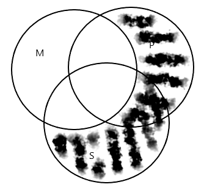

Rezolvări
Bacalaureat 2022
A. Fie următoarele două moduri silogistice: aee-2, aii-3.
1. Scrieți schema de inferență corespunzătoare fiecăruia dintre cele două moduri silogistice date și construiți, în limbaj natural, un silogism care să corespundă uneia dintre cele două scheme de inferență. 8 puncte
2. Verificați explicit, prin metoda diagramelor Venn, validitatea fiecăruia dintre cele două moduri silogistice date, precizând totodată decizia la care ați ajuns. 6 puncte
B. Construiți, atât în limbaj formal cât și în limbaj natural, un silogism valid, prin care să justificați propoziția „Nicio insulă din Pacific nu este necartografiată”. 6 puncte
C. Fie următorul silogism:
Niciun act de prietenie nu este acțiune egoistă. Așadar, având în vedere că toate faptele realizate din interes pentru sine sunt acțiuni egoiste, este evident că niciun act de prietenie nu este faptă realizată din interes pentru sine.
Pornind de la silogismul dat, stabiliți care dintre următoarele propoziții sunt adevărate și care sunt false (notați propozițiile adevărate cu litera A, iar propozițiile false cu litera F):
1. Termenul mediu este distribuit numai în premisa minoră.
2. Predicatul logic al concluziei este reprezentat de termenul „acțiune egoistă”.
3. Premisa minoră a silogismului este o propoziție particulară negativă.
4. Predicatul logic al concluziei este distribuit atât în premisă, cât și în concluzie. 4 puncte
D. Fie următoarea definiție: Adolescența este visul etern al iubirii curate.
1. Menționați o regulă de corectitudine pe care o încalcă definiția dată. 2 puncte
2. Precizați o altă regulă de corectitudine a definirii, diferită de regula identificată la punctul a. și construiți o definiție care să o încalce, având ca definit termenul „adolescența”. 4 puncte
Rezolvare
A.
1.
Modul silogistic aee-2 (Camestres) are următoarea schemă de inferență:
(+) PaM (-)
(+) SeM (+)
(+) SeP (+)
Modul silogistic aii-3 (Datisi) are următoarea schemă de inferență:
(+) MaP (-)
(-) MiS (-)
(-) SiP (-)
Un silogism care corespunde schemei de inferență aee-2:
Toate berzele sunt păsări călătoare.
Unele berze sunt păsări care își fac cuiburile pe stânci.
Unele păsări care își fac cuiburile pe stânci sunt păsări călătoare.
2.
Reprezentarea grafică a modului aee-2 prin metoda diagramelor Venn:
.png)
Modul silogistic este valid dacă în urma reprezentării premiselor, regăsim reprezentată pe diagramă și concluzia. Începem prin reprezentarea premisei majore, PaM, prin hașurarea zonei din cercul P care nu se află în intersecție cu M. Zona este vidă deoarece nu există niciun element P care să nu fie și M. Continuăm prin reprezentarea premisei minore, SeM, hașurând zona de intersecție dintre cercurile S și M (zona este vidă, nu există niciun element S care să fie și M).
Concluzia, SeP, s-ar reprezenta prin hașurarea zonei de intersecție dintre cercul S și cercul P pentru a indica absența elementelor comune. Observăm că intersecția celor două cercuri este deja hașurată ca urmare a reprezentării premiselor și concluzionăm că modul aee-2 este valid.
Reprezentarea grafică a modului aii-3 prin metoda diagramelor Venn:
.png)
Pentru modul aii-3 începem cu reprezentarea premisei universale, MaP. Hașurăm zona din cercul M care nu se află în intersecție cu P pentru a arăta că este vidă. Continuăm cu reprezentarea premisei universale, MiS. Pentru aceasta vom plasa un asterisc în zona de intersecție dintre cercul M și cercul S pentru a arăta că există cel puțin un element acolo. Plasăm asteriscul în domeniul nehașurat.
Concluzia, SiP, s-ar reprezenta prin plasarea unui asterisc în zona de intersecție dintre cercurile S și P. Observăm că asteriscul este deja desenat ca urmare a reprezentării premiselor și concluzionăm că modul aii-3 este valid.
B.
Un silogism care justifică propoziția „Nicio insulă din Pacific nu este necartografiată”:
Nicio insulă nu este necartografiată.
Toate insulele din Pacific sunt insule.
Nicio insulă din Pacific nu este necartografiată.
Silogismul corespunde schemei de inferență eae-1 (Celarent):
(+) MeP (+)
(+) SaM (-)
(+) SeP (+)
Silogismul este valid întrucât respectă toate legile silogismului: termenul mediu este distribuit în cel puțin una din premise (premisa majoră), subiectul și predicatul distribuite fiind în concluzie sunt distribuite și în premisele din care provin, cel puțin una din premise este afirmativă (premisa minoră), iar concluzia este în mod corect negativă (una din premise, cea majoră, fiind negativă), cel puțin una din premise este universală (ambele).
C.
Silogismul dat:
Toate faptele realizate din interes pentru sine sunt acțiuni egoiste.
Niciun act de prietenie nu este acțiune egoistă.
Niciun act de prietenie nu este faptă realizată din interes pentru sine.
În limbaj formal:
(+) PaM (-)
(+) SeM (+)
(+) SeP (+)
1 – A
2 – F
3 – F
4 – A
D.
1. Definiția dată încalcă regula clarității și univocității.
2. O altă regulă de corectitudine a definirii este regula adecvării. O definiție care încalcă regula adecvării: „Adolescența este o perioadă a vieții umane.”
A. Fie următoarele două moduri silogistice: aoo-2, aaa-4.
1. Scrieți schema de inferență corespunzătoare fiecăruia dintre cele două moduri silogistice date și construiți, în limbaj natural, un silogism care să corespundă uneia dintre cele două scheme de inferență. 8 puncte
2. Verificați explicit, prin metoda diagramelor Venn, validitatea fiecăruia dintre cele două moduri silogistice date, precizând totodată decizia la care ați ajuns. 6 puncte
B. Construiți, atât în limbaj formal cât și în limbaj natural, un silogism valid, prin care să justificați propoziția „Unele romane de aventuri nu sunt interesante pentru adolescenți”. 6 puncte
C. Fie următorul silogism:
Este adevărat că unele lecții de logică sunt greu de învățat, știut fiind faptul că unele lecții ce conțin informații mai tehnice sunt lecții de logică și că toate lecțiile ce conțin informații mai tehnice sunt greu de învățat.
Pornind de la silogismul dat, stabiliți care dintre următoarele propoziții sunt adevărate și care sunt false (notați propozițiile adevărate cu litera A, iar propozițiile false cu litera F):
1. Termenul mediu este distribuit numai în premisa majoră.
2. Predicatul logic al concluziei este reprezentat de termenul „lecții de logică”.
3. Concluzia silogismului este o propoziție universală afirmativă.
4. Termenul minor este distribuit în concluzie, dar nedistribuit în premisă. 4 puncte
D. Fie următoarea definiție: Educația este cel mai valoros dar oferit oamenilor de către zei.
1. Menționați o regulă de corectitudine pe care o încalcă definiția dată. 2 puncte
2. Precizați o altă regulă de corectitudine a definirii, diferită de regula identificată la punctul 1. și construiți o definiție care să o încalce, având ca definit termenul „educație”. 4 puncte
Rezolvare
A.
1.
Schema de inferență corespunzătoare modului aoo-2 (Baroco):
(+) PaM (-)
(-) SoM (+)
(-) SoP (+)
Schema de inferență corespunzătoare modului aaa-4:
(+) PaM (-)
(+) MaS (-)
(+) SaP (-)
Un silogism care corespunde schemei de inferență aoo-2:
Toți profesorii universitari dețin un titlu de doctor.
Unii specialiști nu dețin un titlu de doctor.
Unii specialiști nu sunt profesori universitari.
2.
Reprezentarea grafică a modului aoo-2 prin metoda diagramelor Venn:

Modul silogistic este valid dacă în urma reprezentării premiselor, regăsim reprezentată pe diagramă și concluzia. Începem prin reprezentarea premisei universale, PaM , prin hașurarea zonei din cercul P care nu se află în intersecție cu M (zona este vidă, întrucât nu există niciun P care să nu fie în același timp și M). Se reprezintă apoi premisa particulară, SoM, prin plasarea unui asterisc în zona cercului S care nu se află în intersecție cu M (există cel puțin un element S care să nu fie și M). Observăm că există domenii în care am fi putut plasa asteriscul, însă unul dintre acestea este hașurat ca urmare a reprezentării premisei majore. Plasăm asteriscul în domeniul liber.
Concluzia, unii S nu sunt P, s-ar reprezenta prin plasarea unui asterisc în zona cercului S care nu se află în intersecție cu P. Se simbolizează că cel puțin un element S nu este și P. Acest asterisc deja există, ca urmare a reprezentării premiselor. Concluzionăm că modul aoo-2 este valid.
Reprezentarea grafică a modului aaa-4 prin metoda diagramelor Venn:

Începem prin reprezentarea premisei majore, PaM , prin hașurarea zonei din cercul P care nu se află în intersecție cu M (zona este vidă, întrucât nu există niciun P care să nu fie în același timp și M). Continuăm cu reprezentarea premisei minore, MaS, hașurând pe aceleași considerente porțiunea din cercul M care nu se află în intersecție cu S.
Concluzia, SaP, s-ar reprezenta prin hașurarea zonei din cercul S care nu se află în intersecție cu P. Ca urmare a reprezentării premiselor această zonă nu a fost hașurată. Concluzionăm că modul aaa-4 este nevalid.
B.
Un silogism care justifică propoziția „Unele romane de aventuri nu sunt interesante pentru adolescenți.”:
Unele romane ale lui Alexandre Dumas nu sunt interesante pentru adolescenți.
Toate romanele lui Alexandre Dumas sunt romane de aventuri.
Unele romane de aventuri nu sunt interesante pentru adolescenți.
Silogismul corespunde schemei de inferență oao-3 (Bocardo):
(-) MoP (+)
(+) MaS (-)
(-) SoP (+)
Silogismul este valid întrucât respectă toate legile silogismului: termenul mediu este distribuit în cel puțin una din premise (premisa minoră), predicatul distribuit în concluzie este distribuit și în premisa din care provine, cel puțin una din premise este afirmativă (premisa minoră), iar concluzia este în mod corect negativă, cel puțin una din premise este universală (premisa minoră), iar concluzia este în mod corect particulară.
C.
Silogismul dat:
Toate lecțiile ce conțin informații mai tehnice sunt greu de învățat.
Unele lecții ce conțin informații mai tehnice sunt lecții de logică.
Unele lecții de logică sunt greu de învățat.
În limbaj formal:
(+) MaP (-)
(-) MiS (-)
(-) SiP (-)
1 – A
2 – F
3 – F
4 – F
D.
1. Definiția dată încalcă regula clarității și univocității.
2. O altă regulă de corectitudine a definirii este regula adecvării. O definiție care încalcă această această regulă: „Educația este un fenomen social fundamental.” În acest caz, definiția este prea largă.
Bacalaureat 2021
A. Fie următoarele două moduri silogistice: aii-3, eae-2.
1. Scrieți schema de inferență corespunzătoare fiecăruia dintre cele două moduri silogistice date și construiți, în limbaj natural, un silogism care să corespundă uneia dintre cele două scheme de inferență. 8 puncte
2. Verificați explicit, prin metoda diagramelor Venn, validitatea fiecăruia dintre cele două moduri silogistice date, precizând totodată decizia la care ați ajuns. 6 puncte
B. Construiți, atât în limbaj formal cât și în limbaj natural, un silogism valid prin care să justificați propoziția „Unele silogisme nu sunt raționamente valide”. 6 puncte
C. Fie următorul silogism: „Dacă unele acțiuni umane sunt intenționate, atunci unele acțiuni umane sunt voluntare, având în vedere că toate acțiunile intenționate sunt voluntare”. Pornind de la silogismul dat, stabiliți care dintre următoarele propoziții sunt adevărate și care sunt false (notați propozițiile adevărate cu litera A, iar propozițiile false cu litera F):
1. Termenul mediu este distribuit în ambele premise.
2. Concluzia silogismului este o propoziție particulară afirmativă.
3. Predicatul logic al concluziei este reprezentat de termenul „acțiuni intenționate”.
4. Subiectul logic al concluziei este nedistribuit atât în premisă, cât și în concluzie. 4 puncte
D. Fie următoarea definiție: „Silogismul este forma ideală a raționamentului”.
a. Menționați o regulă de corectitudine pe care o încalcă definiția dată. 2 puncte
b. Precizați o altă regulă de corectitudine a definirii, diferită de regula identificată la punctul a. și construiți o definiție care să o încalce, având ca definit termenul „silogism”. 4 puncte
Rezolvare
A.
1.
Schema de inferență corespunzătoare modului aii-3 (Datisi):
(+) MaP (-)
(-) MiS (-)
(-) SiP (-)
Schema de inferență corespunzătoare modului eae-2 (Cesare):
(+) PeM (+)
(+) SaM (-)
(+) SeP (+)
Un silogism care corespunde schemei de inferență aii-3 :
Toate persoanele cu temperament sangvinic sunt sociabile.
Unele persoane cu temperament sangvinic sunt pasionate de științe exacte.
Unele persoane pasionate de științe exacte sunt sociabile.
2.
Reprezentarea grafică a modului aii-3 prin metoda diagramelor Venn:
Conform metodei diagramelor Venn, modul silogistic este valid dacă, după reprezentarea premiselor în diagramă, concluzia se poate deja citi fără a mai fi separat reprezentată. Pentru a reprezenta modul aii-3 am început cu reprezentarea premisei universale, MaP. Am hașurat așadar zona din cercul M care nu se află în intersecție cu P (zonă vidă, nu există niciun M care să nu fie și P). Am continuat prin reprezentarea premisei particulare, MiS, plasând un asterisc în acel domeniu al zonei de intersecție dintre M și S care a rămas nehașurat. Conform premisei, există cel puțin un element M care să fie și S.
Concluzia, SiP, s-ar reprezenta printr-un asterisc în zona de intersecție dintre S și P care să arate că există cel puțin un element S care este și P. Acest asterisc este deja prezent ca urmare a reprezentării premiselor, deci modul silogistic aii-3 este valid.
Reprezentarea grafică a modului eae-2 prin metoda diagramelor Venn:
Pentru a reprezenta modul eae-2 începem prin a reprezenta premisa majoră, PeM. Hașurăm zona de intersecție dintre M și P, zonă vidă deoarece nu există niciun P care să fie și M. Continuăm prin reprezentarea premisei minore, SaM, hașurând zona din cercul S care nu se află în intersecție cu M. Zona este vidă deoarece nu există niciun S care să nu fie și M.
Concluzia, SeP, s-ar reprezenta prin hașurarea zonei de intersecție dintre cercurile S și P. Această porțiune este deja hașurată ca urmare a reprezentării premiselor, deci modul eae-2 este valid.
B.
Un silogism care justifică propoziția „Unele silogisme nu sunt raționamente valide.”:
Niciun raționament valid nu este un sofism.
Unele sofisme sunt silogisme.
Unele silogisme nu sunt raționamente valide.
Silogismul corespunde schemei de inferență eio-4 (Fresison):
(+) PeM (+)
(-) MiS (-)
(-) SoP (+)
Silogismul este valid întrucât respectă toate legile silogismului: termenul mediu este distribuit în cel puțin una din premise (premisa majoră), predicatul distribuit în concluzie este distribuit și în premisa din care provine, cel puțin una din premise este afirmativă (premisa minoră), iar concluzia este în mod corect negativă, cel puțin una din premise este universală (premisa majoră), iar concluzia este în mod corect particulară.
C.
Silogismul dat:
Toate acțiunile intenționate sunt voluntare.
Unele acțiuni umane sunt intenționate.
Unele acțiuni umane sunt voluntare
În limbaj formal:
(+) MaP (-)
(-) SiM (-)
(-) SiP (-)
1 – F
2 – A
3 – F
4 – A
D.
a. Definiția dată încalcă regula clarității și preciziei.
b. O altă regulă de corectitudine a definirii este regula adecvării. O definiție care o încalcă: „Silogismul este un raționament.” Această definiție este prea largă.
A. Fie următoarele două moduri silogistice: eao-1, aaa-2.
1. Scrieți schema de inferență corespunzătoare fiecăruia dintre cele două moduri silogistice date și construiți, în limbaj natural, un silogism care să corespundă uneia dintre cele două scheme de inferență. 8 puncte
2. Verificați explicit, prin metoda diagramelor Venn, validitatea fiecăruia dintre cele două moduri silogistice date, precizând totodată decizia la care ați ajuns. 6 puncte
B. Construiți, atât în limbaj formal cât și în limbaj natural, un silogism valid prin care să justificați propoziția „Toți elevii premianți sunt beneficiari ai burselor de merit”. 6 puncte
C. Fie următorul silogism:
Dacă orice faptă bună este o binefacere, atunci unele acțiuni umane sunt fapte bune, întrucât multe acțiuni umane sunt binefaceri.
Pornind de la silogismul dat, stabiliți care dintre următoarele propoziții sunt adevărate și care sunt false (notați propozițiile adevărate cu litera A, iar propozițiile false cu litera F):
1. Subiectul logic al silogismului este termenul „acțiuni umane”.
2. Termenul mediu este nedistribuit doar în premisa minoră .
3. Termenii extremi sunt nedistribuiți în concluzie.
4. Predicatul logic al silogismului este termenul „binefacere”. 4 puncte
D. Fie următoarea definiție: Tigrul este un animal carnivor.
1. Menționați o regulă de corectitudine pe care o încalcă definiția dată. 2 puncte
2. Precizați o altă regulă de corectitudine a definirii, diferită de regula identificată la punctul 1. și construiți o definiție care să o încalce, având ca definit termenul „tigru”. 4 puncte
Rezolvare
A.
1. Modul silogistic eao-1 (Celaront) are următoarea schemă de inferență:
(+) MeP (+)
(+) SaM (-)
(-) SoP (+)
Modul silogistic aaa-2 are următoarea schemă de inferență:
(+) PaM (-)
(+) SaM (-)
(+) SaP (-)
Un silogism care corespunde schemei de inferență eao-1:
Niciun sportiv de performanță nu este indolent.
Toți participanții la Jocurile Olimpice sunt sportivi de performanță.
Unii participanți la Jocurile Olimpice nu sunt indolenți.
2. Reprezentarea grafică a modului eao-1 prin metoda diagramelor Venn:
.png)
Modul silogistic este valid dacă în urma reprezentării premiselor, regăsim reprezentată pe diagramă și concluzia. Începem prin reprezentarea premisei majore, MeP, prin hașurarea zonei de intersecție dintre cercurile M și P (zona este vidă, nu există niciun element M care să fie și P). Continuăm prin reprezentarea premisei minore, SaM. Hașurăm zona din cercul S care nu se află în intersecție cu M, zona este vidă deoarece nu există niciun element S care să nu fie și M.
Concluzia, SoP, s-ar reprezenta prin plasarea unui asterisc în zona cercului S care nu se află în intersecție cu P (cel puțin un element S nu este și P). Asteriscul nu se află deja reprezentat pentru că ambele premise au fost universale. Ne folosim în acest caz de presupoziția că extensiunea termenilor este nevidă. Observăm că, în cazul termenului S, a rămas un singur domeniu nehașurat, iar dacă extensiunea sa nu este vidă în această zonă trebuie să existe cel puțin un element. Plasăm un x rond și concluzionăm că modul silogistic dat este valid, avem reprezentarea faptului că cel puțin un element S nu este P (SoP).
Reprezentarea grafică a modului aaa-2 prin metoda diagramelor Venn:

Pentru modul aaa-2 începem prin reprezentarea premisei majore, PaM. Hașurăm zona din cercul P care nu se află în intersecție cu M, zona este vidă deoarece nu există niciun element P care să nu fie și M. Reprezentăm apoi premisa minoră, SaM, hașurând zona din cercul S care nu se află în intersecție cu M, pe aceleași considerente.
Concluzia, SaP, s-ar reprezenta prin hașurarea zonei din cercul S care nu se află în intersecție cu P. Observăm că acest lucru nu apare pe diagramă, există o porțiune a acestui domeniu în legătură cu care premisele nu ne oferă informații. Concluzionăm că modul aaa-2 este nevalid.
B.
Un silogism care justifică propoziția „Toți elevii premianți sunt beneficiari ai burselor de merit.”:
Toți elevii cu rezultate excepționale la învățătură sunt beneficiari ai burselor de merit.
Toți elevii premianți sunt elevi cu rezultate excepționale la învățătură.
Toți elevii premianți sunt beneficiari ai burselor de merit.
Silogismul corespunde schemei de inferență aaa-1 (Barbara):
(+) MaP (-)
(+) SaM (-)
(+) SaP (-)
Silogismul este valid întrucât respectă toate legile silogismului: termenul mediu este distribuit în cel puțin una din premise (premisa majoră), subiectul distribuit în concluzie este distribuit și în premisa din care provine, cel puțin una din premise este afirmativă (ambele), iar concluzia este în mod corect afirmativă, cel puțin una din premise este universală (ambele).
C.
Silogismul dat:
Unele acțiuni umane sunt binefaceri.
Toate faptele bune sunt binefaceri.
Unele acțiuni umane sunt fapte bune.
În limbaj formal:
(-) PiM (-)
(+) SaM (-)
(-) SiP (-)
1 – A
2 – F
3 – A
4 – F
D.
1. Definiția dată încalcă regula adecvării, fiind prea largă.
2. O altă regulă de corectitudine a definirii este regula definirii afirmative. O definiție care o încalcă: „Tigrul nu este nici leu, nici pisică.”
A. Fie următoarele două moduri silogistice: eio-3, iai-4.
1. Scrieți schema de inferență corespunzătoare fiecăruia dintre cele două moduri silogistice date și construiți, în limbaj natural, un silogism care să corespundă uneia dintre cele două scheme de inferență. 8 puncte
2. Verificați explicit, prin metoda diagramelor Venn, validitatea fiecăruia dintre cele două moduri silogistice date, precizând totodată decizia la care ați ajuns. 6 puncte
B. Construiți, atât în limbaj formal cât și în limbaj natural, un silogism valid, cu premise adevărate, prin care să justificați propoziția “Unele programe informatice sunt utilizate fără licență”. 6 puncte
C. Fie următorul silogism: Niciun sportiv de performanță nu este leneș, pentru că niciun om leneș nu participă la antrenamente susținute, în timp ce toți sportivii de performanță participă la antrenamente susținute.
Pornind de la silogismul dat, stabiliți care dintre următoarele propoziții sunt adevărate și care sunt false (notați propozițiile adevărate cu litera A, iar propozițiile false cu litera F):
1. Termenul mediu este distribuit în ambele premise.
2. Predicatul logic al concluziei este reprezentat de termenul „sportiv de performanță”.
3. Concluzia silogismului este o propoziție universală negativă.
4. Subiectul logic al concluziei este distribuit și în premisă și în concluzie. 4 puncte
D. Fie următoarea definiție: Creionul este un instrument de scris.
a. Menționați o regulă de corectitudine pe care o încalcă definiția dată. 2 puncte
b. Precizați o altă regulă de corectitudine a definirii, diferită de regula identificată la punctul a. și construiți o definiție care să o încalce, având ca definit termenul „creion”. 4 puncte
Rezolvare
A.
1.
Modul silogistic eio-3 (Ferison) are următoarea schemă de inferență:
(+) MeP (+)
(-) MiS (-)
(-) SoP (+)
Modul silogistic iai-4 (Dimaris) are următoarea schemă de inferență:
(-) PiM (-)
(+) MaS (-)
(-) SiP (-)
Un silogism care corespunde schemei de inferență iai-4:
Unii asistenți universitari sunt doctoranzi.
Toți doctoranzii sunt licențiați.
Unii licențiați sunt asistenți universitari.
2.
Reprezentarea grafică a modului eio-3 prin metoda diagramelor Venn:
.png)
Modul silogistic este valid dacă în urma reprezentării premiselor, regăsim reprezentată pe diagramă și concluzia. Începem prin reprezentarea premisei universale, MeP, prin hașurarea zonei de intersecție dintre cercul M și cercul P. Această zonă este vidă, nu există niciun M care să fie în același timp și P. Continuăm prin reprezentarea premisei particulare, MiS, plasând un asterisc în zona de intersecție dintre cercul M și cercul S. Cel puțin un M este și S conform premisei. Cum o porțiune din această zonă este deja hașurată ca urmare a reprezentării premisei majore vom plasa asteriscul în zona liberă.
Concluzia, SoP, s-ar reprezenta prin plasarea unui asterisc în zona cercului S care nu se află în intersecție cu cercul P. Acest asterisc înseamnă că cel puțin un S nu este și P. După cum putem observa în diagramă, asteriscul deja există ca urmare a reprezentării premiselor, deci modul eio-3 este valid.
Reprezentarea grafică a modului iai-4 prin metoda diagramelor Venn:
Începem prin reprezentarea premisei universale, MaS, prin hașurarea zonei din cercul M care nu se află în intersecție cu S (zona este vidă, întrucât nu există niciun M care să nu fie în același timp și S). Reprezentăm apoi premisa particulară, cea majoră, PiM, plasând un asterisc în zona de intersecție dintre cercul P și cercul M. Acest asterisc înseamnă că cel puțin un M este și S. Concluzia, SiP, s-ar reprezenta prin plasarea unui asterisc în zona de intersecție dintre cercul S și cercul P (cel puțin un S este și P). Observăm că acest lucru apare deja pe diagramă ca urmare a reprezentării premiselor, deci modul iai-4 este valid.
B.
Un silogism care justifică propoziția „Unele programe informatice sunt utilizate fără licență.”:
Unele programe antivirus sunt utilizate fără licență.
Toate programele antivirus sunt programe informatice.
Unele programe informatice sunt utilizate fără licență.
Silogismul corespunde schemei de inferență iai-3 (Disamis):
(-) MiP (-)
(+) MaS (-)
(-) SiP (-)
Silogismul este valid întrucât respectă toate legile silogismului: termenul mediu este distribuit în cel puțin una din premise (premisa minoră), predicatul și subiectul nu sunt distribuite în concluzie fiind așadar irelevantă distribuirea lor în premise, cel puțin una din premise este afirmativă (ambele), iar concluzia este în mod corect afirmativă, cel puțin una din premise este universală (premisa minoră), iar concluzia este în mod corect particulară.
C.
Silogismul dat:
Niciun om leneș nu participă la antrenamente susținute.
Toți sportivii de performanță participă la antrenamente susținute.
Niciun sportiv de performanță nu este leneș.
În limbaj formal:
(+) PeM (+)
(+) SaM (-)
(+) SeP (+)
1 – F
2 – F
3 – A
4 – A
D.
a.
Definiția dată încalcă regula adecvării, fiind o definiție prea largă.
b.
O altă regulă a definirii corecte este cea a exprimării esenței. O definiție care o încalcă este următoarea: „Creionul este instrumentul cu care se învață scrisul frumos.”
Bacalaureat 2020
A. Fie următoarele două moduri silogistice: aaa-1, aoo-2.
1. Scrieți schema de inferență corespunzătoare fiecăruia dintre cele două moduri silogistice date și construiți, în limbaj natural, un silogism care să corespundă uneia dintre cele două scheme de inferență. 8 puncte
2. Verificați explicit, prin metoda diagramelor Venn, validitatea fiecăruia dintre cele două moduri silogistice date, precizând totodată decizia la care ați ajuns. 6 puncte
B. Construiți, atât în limbaj formal cât și în limbaj natural, un silogism valid, prin care să justificați propoziția “Nicio persoană imorală nu este interesată de dreptate”. 6 puncte
C. Fie următorul silogism: Dacă niciun adolescent nu este pensionar, atunci niciun pensionar nu este elev de liceu, având în vedere că toți elevii de liceu sunt adolescenți. Pornind de la silogismul dat, stabiliți care dintre următoarele propoziții sunt adevărate și care sunt false (notați propozițiile adevărate cu litera A, iar propozițiile false cu litera F):
1. Termenul mediu este nedistribuit în premisa majoră.
2. Predicatul logic al concluziei este reprezentat de termenul „elev de liceu”.
3. Premisa minoră este o propoziție universal afirmativă.
4. Predicatul logic al concluziei este distribuit atât în premisă, cât și în concluzie. 4 puncte
D. Fie următoarea definiție: Adolescența este vârsta marilor reverii.
a. Menționați o regulă de corectitudine pe care o încalcă definiția dată. 2 puncte
b. Precizați o altă regulă de corectitudine a definirii, diferită de regula identificată la punctul a. și construiți o definiție care să o încalce, având ca definit termenul „adolescență”. 4 puncte
Rezolvare
A.
1.
Schema de inferență corespunzătoare modului aaa-1 (Barbara):
(+) MaP (-)
(+) SaM (-)
(+) SaP (-)
Schema de inferență corespunzătoare modului aoo-2 (Baroco):
(+) PaM (-)
(-) SoM (+)
(-) SoP (+)
Un silogism care corespunde schemei de inferență aoo-2:
Toate produsele lactate sunt sărace în fier și cupru.
Toate brânzeturile sunt produse lactate.
Toate brânzeturile sunt sărace în fier și cupru.
2.
Reprezentarea grafică a modului aaa-1 prin metoda diagramelor Venn:

Conform metodei diagramelor Venn, modul silogistic este valid dacă, după reprezentarea premiselor în diagramă, concluzia se poate deja citi fără a mai fi separat reprezentată.
Pentru a reprezenta modul aaa-1, am început cu reprezentarea premisei majore, MaP. Hașurăm zona din cercul M care nu se suprapune cu cercul P, întrucât aceasta este vidă (toți M sunt P, deci nu există M care să nu facă parte din P). Pentru reprezentarea premisei minore, SaM, vom hașura zona din cercul S care nu se suprapune cu cercul M, întrucât aceasta este vidă.
Concluzia SaP s-ar reprezenta prin hașurarea completă a zonei din cercul S care nu se suprapune cu cercul P (toți S sunt P, deci zona este vidă). Cum avem un mod silogistic valid, acest lucru apare deja pe diagramă ca urmare a reprezentării premiselor.
Reprezentarea grafică a modului aoo-2 prin metoda diagramelor Venn:

Începem prin reprezentarea premisei majore prin hașurarea zonei din cercul P care nu se află în intersecție cu M (zona este vidă, întrucât nu există niciun P care să nu fie în același timp și M). Se reprezintă apoi premisa minoră prin plasarea unui asterisc în interiorul cercului S, partea care nu se află în intersecție cu M și nu a fost hașurată ca urmare a reprezentării premisei majore. Asteriscul arată că există cel puțin un element S care să nu fie M.
Concluzia, unii S nu sunt P, s-ar reprezenta prin plasarea unui asterisc în interiorul cercului S, partea care nu se află în intersecție cu P, care să simbolizeze prezența a cel puțin unui element S care să nu fie și P. După cum se poate observa în diagramă, asteriscul este deja plasat în zona menționată, ca urmare a reprezentării premiselor, ceea ce înseamnă că modul silogistic este valid.
B.
Un silogism care justifică propoziția „Nicio persoană imorală nu este interesată de dreptate.”:
Nicio persoană lipsită de empatie nu este interesată de dreptate.
Toate persoanele imorale sunt lipsite de empatie.
Nicio persoană imorală nu este interesată de dreptate.
Silogismul corespunde schemei de inferență eae-1 (Celarent):
(+) MeP (+)
(+) SaM (-)
(+) SeP (+)
Silogismul este valid întrucât respectă toate legile silogismului: termenul mediu este distribuit în cel puțin una din premise (premisa majoră), subiectul și predicatul distribuite în concluzie sunt distribuite și în premise, cel puțin una din premise este afirmativă (premisa minoră), iar concluzia este în mod corect negativă (premisa majoră fiind negativă), cel puțin una din premise este universală (ambele).
C.
1 – A
2 – A
3 – F
4 – A
D.
a. Definiția încalcă regula clarității și univocității.
b. O altă regulă de corectitudine a definirii este regula formei afirmative. O definiție care o încalcă: „Adolescența este o perioadă diferită de copilărie sau de maturitate.”
Bacalaureat 2019
A. Fie următoarele două moduri silogistice: aae-2, iai-3.
1. Scrieți schema de inferență corespunzătoare fiecăruia dintre cele două moduri silogistice date și construiți, în limbaj natural, un silogism care să corespundă uneia dintre cele două scheme de inferență. 8 puncte
2. Verificați explicit, prin metoda diagramelor Venn, validitatea fiecăruia dintre cele două moduri silogistice date, precizând totodată decizia la care ați ajuns. 6 puncte
B. Construiți, atât în limbaj formal cât și în limbaj natural, un silogism valid, prin care să justificați propoziția „Nicio propoziție clară nu este interpretabilă”. 6 puncte
C. Fie următorul silogism: Unele cărți ce conțin termeni complicați nu sunt cărți ușor de citit pentru că nicio carte de filosofie nu este ușor de citit, iar toate cărțile de filosofie sunt cărți ce conțin termeni complicați.
Pornind de la silogismul dat, stabiliți care dintre următoarele propoziții sunt adevărate și care sunt false (notați propozițiile adevărate cu litera A, iar propozițiile false cu litera F):
1. Termenul mediu este distribuit în ambele premise.
2. Predicatul logic al concluziei este reprezentat de termenul „cărți ce conțin termeni complicați”.
3. Concluzia silogismului este o propoziție particulară negativă.
4. Subiectul logic al concluziei este distribuit atât în premisă, cât și în concluzie. 4 puncte
D. Fie următoarea definiție: Geografia este știința care studiază munții și câmpiile.
a. Menționați o regulă de corectitudine pe care o încalcă definiția dată. 2 puncte
b. Precizați o altă regulă de corectitudine a definirii, diferită de regula identificată la punctul a. și construiți o definiție care să o încalce, având ca definit termenul „geografia”. 4 puncte
Rezolvare:
A.
1.
Schema de inferență corespunzătoare modului aae-2:
(+) PaM (-)
(+) SaM (-)
(+) SeP (+)
Schema de inferență corespunzătoare modului iai-3 (Disamis):
(-) MiP (-)
(+) MaS (-)
(-) SiP (-)
Silogism în limbaj natural care corespunde modului iai-3:
Unele păsări sunt migratoare.
Toate păsările sunt vietăți care se înmulțesc prin ouă.
Unele vietăți care se înmulțesc prin ouă sunt migratoare.
2.
Conform metodei diagramelor Venn, un mod silogistic este valid dacă după reprezentarea premiselor în diagramă concluzia apare deja reprezentată și se poate citi în figură.
Modul aae-2 va avea următoarea reprezentare:

Am reprezentat mai întâi premisa majoră, PaM, hașurând zona din cercul P care nu se află inclusă în M (dacă toți P sunt M, atunci nu există niciun P care să fie în afara cercului M, deci acea zonă este vidă). Apoi am reprezentat premisa minoră, SaM, hașurând zona din cercul S care nu se află inclusă în M (pe aceleași considerente, zona este vidă). Concluzia, SeP, s-ar reprezenta prin hașurarea zonei de intersecție dintre S și P (niciun S nu este și P, zonă vidă). Dacă modul este valid, acest lucru ar trebui să apară deja pe diagramă, ca urmare a reprezentării premiselor. Putem însă observa că doar jumătate din porțiunea respectivă este hașurată, despre cealaltă jumătate premisele neoferind nicio informație. Deducem că modul aae-2 este nevalid.
Modul iai-3 va avea următoarea reprezentare:

Am început prin reprezentarea premisei universale, MaS, hașurând zona din cercul M care nu se află inclusă în S (toți M sunt S, așa că zona respectivă este vidă). Apoi am reprezentat premisa particulară, MiP, prin plasarea unui asterisc în zona de intersecție dintre cercurile M și P (cel puțin un element este simultan și M și P conform premisei). Cum zona de intersecție era parțial hașurată ca urmare a reprezentării lui MaS, am plasat asteriscul în zona liberă. Concluzia, SiP, s-ar reprezenta printr-un asterisc în zona de intersecție dintre cercurile S și P, care să indice prezența a cel puțin unui element care să fie și S și P. Acest asterisc este deja prezent în diagramă, ceea ce înseamnă că modul silogistic iai-3 este valid.
B.
Nicio propoziție care folosește termeni preciși nu este interpretabilă.
Toate propozițiile clare folosesc termeni preciși.
Nicio propoziție clară nu este interpretabilă.
Silogismul aparține modului silogistic valid eae-1 (Celarent) care are următoarea schemă de inferență:
(+) MeP (+)
(+) SaM (-)
(+) SeP (+)
C.
1 – A, 2 – F, 3 – A, 4 – F
D.
a. Definiția dată încalcă regula adecvării.
b. O altă regulă de corectitudine a definii este regula clarității și univocității. O definiție care o încalcă: Geografia este preocuparea omului față de misterul naturii.
A. Fie următoarele două moduri silogistice: eae-2, aii-3.
1. Scrieți schema de inferență corespunzătoare fiecăruia dintre cele două moduri silogistice date și construiți, în limbaj natural, un silogism care să corespundă uneia dintre cele două scheme de inferență. 8 puncte
2. Verificați explicit, prin metoda diagramelor Venn, validitatea fiecăruia dintre cele două moduri silogistice date, precizând totodată decizia la care ați ajuns. 6 puncte
B. Construiți, atât în limbaj formal cât și în limbaj natural, un silogism valid, prin care să justificați propoziția „Unele acțiuni umane nu sunt acceptabile”. 6 puncte
C. Fie următorul silogism: Niciun raționament incorect nu este valid, așadar unele silogisme nu sunt valide, deoarece unele silogisme sunt raționamente incorecte.
Pornind de la silogismul dat, stabiliți care dintre următoarele propoziții sunt adevărate și care sunt false (notați propozițiile adevărate cu litera A, iar propozițiile false cu litera F):
1. Termenul mediu este distribuit într-o singură premisă.
2. Predicatul logic al concluziei este reprezentat de termenul „raționament incorect”.
3. Concluzia silogismului este o propoziție particulară afirmativă.
4. Subiectul logic al concluziei este nedistribuit atât în premisă, cât și în concluzie. 4 puncte
D. Fie următoarea definiție: Muntele este o formă de relief muntoasă.
a. Menționați o regulă de corectitudine pe care o încalcă definiția dată. 2 puncte
b. Precizați o altă regulă de corectitudine a definirii, diferită de regula identificată la punctul a. și construiți o definiție care să o încalce, având ca definit termenul „munte”. 4 puncte
Rezolvare
A.
Schema de inferență corespunzătoare modului eae-2 (Cesare):
(+) PeM (+)
(+) SaM (-)
(+) SeP (+)
Schema de inferență corespunzătoare modului aii-3 (Datisi):
(+) MaP (-)
(-) MiS (-)
(-) SiP (-)
Un silogism care corespunde schemei de inferență aii-3:
Toți profesorii de liceu au studii superioare.
Unii profesori de liceu sunt microbiști.
Unii microbiști au studii superioare.
Reprezentarea grafică a modului eae-2 prin metoda diagramelor Venn:

Modul silogistic este valid dacă în urma reprezentării premiselor, regăsim reprezentată pe diagramă și concluzia. Începem prin reprezentarea premisei majore prin hașurarea zonei de intersecție dintre cercul M și cercul P (zona este vidă întrucât nu există niciun M care să fie și P). Se reprezintă apoi premisa minoră prin hașurarea zonei din cercul S care nu se află în intersecție cu M (zona este vidă, întrucât nu există niciun S care să nu fie în același timp și M).
Concluzia, niciun S nu este P, s-ar reprezenta prin hașurarea zonei de intersecție dintre cercul S și cercul P (zonă vidă). După cum se poate observa în diagramă, zona este deja în întregime hașurată, ca urmare a reprezentării premiselor, deci modul silogistic este valid.
Reprezentarea grafică a modului aii-3 prin metoda diagramelor Venn:

Începem prin reprezentarea premisei universale (cea majoră) prin hașurarea porțiunii din cercul M care nu se suprapune cu P (zona este vidă întrucât nu există niciun M care să nu fie simultan și P). Premisa particulară, cea minoră, se reprezintă prin plasarea unui asterisc în zona de intersecție dintre cercul M și cercul S, care semnifică existența a cel puțin unui element S care să fie și M. Putem observa că jumătate din zonă este deja hașurată ca urmare a reprezentării premisei majore, așa că vom plasa asteriscul în zona liberă.
Concluzia, SiP, s-ar reprezenta prin plasarea unui asterisc în zona de intersecție dintre cercurile S și P care să semnifice că cel puțin un element S este și P. Acest lucru este deja prezent în diagramă ca urmare a reprezentării premiselor, așadar modul analizat este valid.
B.
Un silogism care justifică propoziția „Unele acțiuni umane nu sunt acceptabile.”:
Niciun act de cruzime nu este acceptabil.
Toate actele de cruzime sunt acțiuni umane.
Unele acțiuni umane nu sunt acceptabile.
Silogismul corespunde schemei de inferență aii-1 (Darii):
(+) MeP (+)
(+) MaS (-)
(-) SoP (+)
Silogismul este valid întrucât respectă toate legile silogismului: termenul mediu este distribuit în cel puțin una din premise (ambele), predicatul distribuit în concluzie este distribuit și în premisa din care provine, cel puțin una din premise este afirmativă (premisa minoră), iar concluzia este în mod corect negativă, cel puțin una din premise este universală (ambele).
C.
1 – A
2 – F
3 – F
4 – A
D.
a.
Definiția încalcă regula evitării circularității.
b.
O altă regulă de corectitudine a definirii este regula formei afirmative. O definiție care o încalcă: „Muntele este o formă de relief diferită de câmpie sau de deal.”
A. Fie următoarele două moduri silogistice: oao-3, aia-2.
1. Scrieți schema de inferență corespunzătoare fiecăruia dintre cele două moduri silogistice date și construiți, în limbaj natural, un silogism care să corespundă uneia dintre cele două scheme de inferență. 8 puncte
2. Verificați explicit, prin metoda diagramelor Venn, validitatea fiecăruia dintre cele două moduri silogistice date, precizând totodată decizia la care ați ajuns. 6 puncte
B. Construiți, atât în limbaj formal cât și în limbaj natural, un silogism valid, prin care să justificați propoziția „Unele planete sunt lipsite de viață” 6 puncte
C. Fie următorul silogism: Nicio pasăre nu este mamifer, deci liliecii nu sunt păsări, deoarece liliecii sunt mamifere. Pornind de la silogismul dat, stabiliți care dintre următoarele propoziții sunt adevărate și care sunt false (notați propozițiile adevărate cu litera A, iar propozițiile false cu litera F):
1. Termenul mediu este distribuit în ambele premise.
2. Predicatul logic al concluziei este reprezentat de termenul „pasăre”.
3. Concluzia silogismului este o propoziție universală negativă.
4. Subiectul logic al concluziei este distribuit în premisă, dar este nedistribuit în concluzie. 4 puncte
D. Fie următoarea definiție: Cercul este figura geometrică plană care nu este nici romb, nici dreptunghi.
1. Menționați o regulă de corectitudine pe care o încalcă definiția dată. 2 puncte
2. Precizați o altă regulă de corectitudine a definirii, diferită de regula identificată la punctul 1. și construiți o definiție care să o încalce, având ca definit termenul „cerc”. 4 puncte
Rezolvare
A.
1.
Schema de inferență corespunzătoare modului oao-3 (Bocardo):
(-) MoP (-)
(+) MaS (-)
(-) SoP (+)
Schema de inferență corespunzătoare modului aia-2:
(+) PaM (-)
(-) SiM (-)
(+) SaP (-)
Un silogism care corespunde schemei de inferență oao-3:
Unele afaceri nu sunt povești de succes.
Toate afacerile necesită o investiție de ordin financiar.
Unele lucruri care necesită o investiție de ordin financiar nu sunt povești de succes.
2.
Reprezentarea grafică a modului oao-3 prin metoda diagramelor Venn:

Modul silogistic este valid dacă în urma reprezentării premiselor, regăsim reprezentată pe diagramă și concluzia. Începem prin reprezentarea premisei universale (cea minoră) prin hașurarea zonei din cercul M care nu se află în intersecție cu S (zona este vidă, întrucât nu există niciun M care să nu fie în același timp și S). Se reprezintă apoi premisa particulară prin plasarea unui asterisc în zona din cercul M care nu se află în intersecție cu P. Asteriscul reprezintă existența a cel puțin unui element în acea zonă, a cel puțin unui M care să nu fie P. Putem observa că zona are două porțiuni, una dintre acestea deja hașurată (vidă), așa că plasăm asteriscul în zona liberă.
Ca urmare a reprezentării premiselor, putem observa în diagramă și concluzia, ceea ce înseamnă că modul aee-2 este valid. Concluzia, unii S nu sunt P, se reprezintă prin plasarea unui asterisc în zona cercului S care nu se află în intersecție cu P. Asteriscul este deja prezent, ca urmare a reprezentării premiselor.
Reprezentarea grafică a modului aia-2 prin metoda diagramelor Venn:

Începem prin reprezentarea premisei universale (cea majoră) prin hașurarea porțiunii din cercul P care nu se suprapune cu M (zona este vidă întrucât nu există niciun P care să nu fie simultan și M). Premisa particulară, cea minoră, se reprezintă prin plasarea unui asterisc în zona de intersecție dintre cercul M și cercul S, care semnifică existența a cel puțin unui element S care să fie și M. Cum zona are două porțiuni, iar elementul ar putea fi în oricare dintre ele, plasăm asteriscul pe linia de demarcație dintre cele două. Premisa, SaP, s-ar reprezenta prin hașurarea porțiunii din cercul S care nu se află în intersecție cu P, toți S sunt P, deci acea zonă ar trebui să fie vidă. Ca urmare a reprezentării premiselor însă, acest lucru nu reiese din diagramă. Știm doar că într-una din cele două porțiuni ale cercului S nesuprapus cu P s-ar putea să existe cel puțin un element, în timp ce despre cealaltă porțiune nu știm nimic. Pe aceste considerente, putem concluziona că modul analizat este nevalid.
B.
Un silogism care justifică propoziția „Unele planete sunt lipsite de viață.”:
Toate corpurile cerești în care nu există apă sunt lipsite de viață.
Unele planete sunt corpuri cerești în care nu există apă.
Unele planete sunt lipsite de viață.
Silogismul corespunde schemei de inferență aii-1 (Darii):
(+) MaP (-)
(-) SiM (-)
(-) SiP (-)
Silogismul este valid întrucât respectă toate legile silogismului: termenul mediu este distribuit în cel puțin una din premise (premisa majoră), subiectul și predicatul nu sunt distribuite în concluzie, fiind irelevant dacă sunt distribuite în premise, cel puțin una din premise este afirmativă (ambele), iar concluzia este în mod corect afirmativă, cel puțin una din premise este universală (premisa majoră), iar concluzia este în mod corect particulară ținând cont că una din premise este particulară.
C.
1 – F, 2 – A, 3 – A, 4 – F
D.
1. Definiția încalcă regula formei afirmative.
2. O altă regulă de corectitudine a definirii este regula adecvării. O definiție care o încalcă: „Cercul este o figură geometrică.”